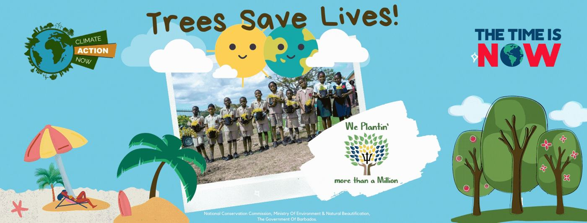
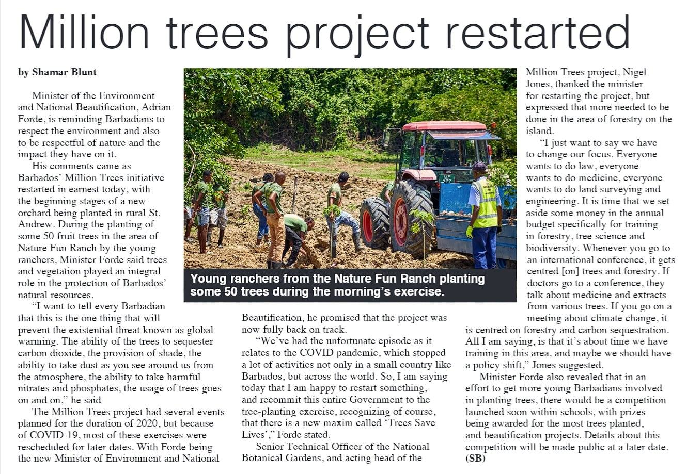

Taking the national tree-planting drive into schools through planting exercises, Arbofest 2020 and creative media.

At the end of 2019, Prime Minister Mia Amor Mottley called on Barbadians to create a small nursery in their backyards. Mottley made the call as she launched the Million Trees for 2020 Project, at Daryll Jordan Secondary School, in St. Luc. She said Government’s aim is to plant more than a million trees on this island by the end of 2020. This was started by the Ministry of Agriculture under the guidance of Indar Weir ‘ We are Plantin’ More Than A Million National Tree Planting Project ’ as not just a mitigation measure against climate change, but also a project that equally addresses food security in Barbados.

In the month of October 2020. The National Tree Planting Project (Barbados) boosted with new vigour. with Haigh Communication was at the forefront of this revamp introducing fresh ideas coupled with a new direction. This included in-house platform development vendor platform selection, live tree tracking web platform, tree identification web application, tree tagging (GIS System – Geolocation Platform).
However, Haigh Communications went a step further by proposing an interesting and thought-provoking school competition with an interactive online platform. There is clear evidence of Haigh Communication’s commitment to transforming the natural landscape of Barbados as there has been a steady increase in social media activity reported from the mainly to due to their content management efforts with respect to:
- Trees Planting Exercises
- Arbofest 2020
- Creative Media
Haigh Communication envisioned that their innovative plans would create a sense of empowerment in students, to capture opportunities to learn more and contribute to the Fight Against Climate Change. Her Excellency, Ms. Marie Legault, High Commissioner of Canada and over 50 staff members of the Canadian High Commission in Bridgetown alongside The Honorable Adrian Forde, Minister of the Environment and Natural Beautification celebrated the official opening of WIRRED’s new Walkers Reserve Educational Building., Canada’s National Tree Day and World Habitat Day by planting a variety of 51 trees at Walkers Institute for Regenerative, Research, Education, and Design (WIRRED’s) Walkers Reserve project.

This just shows the project has even garnered international recognition with the Chief Executive Officer of the Ghana Tourism Authority (GTA) Akwasi Agyeman as well declaring that he is so impressed with the project that he is hoping to replicate it in Ghana. This is only one example of Haigh Communication’s Commitment to Excellence.
Additional information can be found on the NTPP Social Media Facebook & Instagram @nationaltreeplantingprojectbarbados